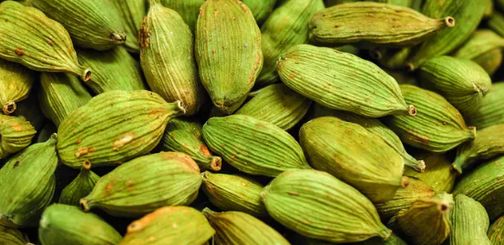

Cardamom Tea
Cardamom is a spice in the same family as ginger and turmeric. When used in tea, blends usually contain either whole cardamom pods or cardamom seeds, both of which have a spicy, warm flavor.
Green cardamom is most commonly used in tea blends, but some may also feature black cardamom, which is darker and slightly smokier.
Benifits of Cardamom Tea
- Cardamom tea contains anti-inflammatory properties
- A soothing cup of cardamom tea can help with inflammation. Studies suggest that cardamom tea contains anti-inflammatory properties. While inflammation is the body's way of protecting itself, chronic inflammation can have negative consequences for your health. While a good cup of tea shouldn't be your only way of calming inflammation, it's a good addition to a healthy routine.
- Cardamom tea helps with digestion
- If you're having stomach troubles, or just want something soothing to drink after a heavy meal, a cup of cardamom tea can help. Along with similar spices like ginger, cardamom has been used as an herbal remedy to aid digestion for hundreds of years. Studies suggest that it may also help with digestive issues.
- Cardamom tea is good for heart health
- A cup of cardamom tea can play a small part in maintaining a healthy heart. Some studies have shown that cardamom can help to lower blood pressure and improve antioxidant status
- Cardamom tea is good for your teeth
- Looking to protect your pearly whites? Cardamom is a popular post-meal breath refresher. While some people eat whole cardamom pods to freshen their breath, a cup of cardamom tea is a great alternative. Studies suggest that cardamom can help to improve overall oral health and prevent cavities.
- It tastes great!
- We love teas with beneficial properties, but we choose our teas first and foremost based on their great taste. Cardamom is the perfect complement to other ingredients in spiced tea blends like chai. Spicy, warming, and with hints of citrus and mint, cardamom is a unique flavor that pairs wonderfully with loose leaf tea.
Cardamom Tea Ingredients
- Milk – Use fresh milk for making tea. You can use farm fresh milk or packaged milk too.
- Tea Powder – The tea powder is the important ingredient so choose the one that is flavorful and aromatic.
- Ginger, Cardamom – Ginger and cardamom are added to flavor the tea. You can skip ginger and add just cardamom alone.
- Sugar – I have used white granulated sugar, you can replace with cane sugar or brown sugar too.

For More information, Click on the above Cardamom